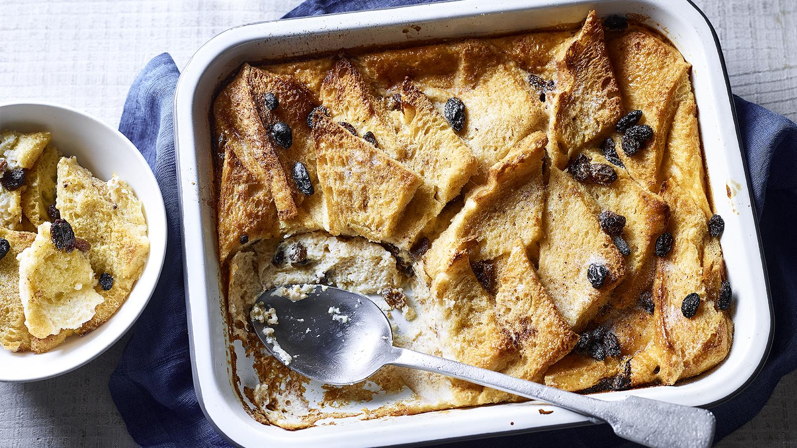

Home
Bread and butter pudding

Description
Old-fashioned English bread and butter pudding started out as a way to use up day-old bread, but now we make it just because it's glorious. Crisp-edged and soft in the middle, this is a cosy pudding you'll want to make on repeat.
Each serving provides 408 kcal, 12.5g protein, 44g carbohydrates (of which 20g sugars), 20g fat (of which 11g saturates), 2g fibre and 0.9g salt.
Ingredients
- 25g/1oz butter, plus extra for greasing
- 8 thick slices white bread, (crusts removed if desired)
- 50g/2oz sultanas
- 2 tsp cinnamon powder
- 350ml/12fl oz full-fat milk
- 50ml/2fl oz double cream
- 2 free-range eggs
- 25g/1oz granulated sugar
- nutmeg, grated, to taste
- custard, to serve (optional)
Method
- Grease an ovenproof dish (about 23x28cm/9x11in) with butter.
- Butter each slice of bread on one side, then cut into triangles.
- Arrange a layer of bread, buttered-side up, in the bottom of the dish, then add a layer of sultanas. Sprinkle with a little cinnamon, then repeat the layers of bread and sultanas, sprinkling with cinnamon, until you have used up all of the bread. Finish with a layer of bread, then set aside.
- Gently warm the milk and cream in a saucepan over a low heat to scalding point. Do not let it boil.
- Crack the eggs into a bowl, add three-quarters of the sugar and lightly whisk until pale. Add the warm milk and cream mixture and stir well, then strain the custard into a bowl.
- Pour the custard over the prepared bread layers, sprinkle with nutmeg and the remaining sugar and leave to stand for 30 minutes.
- Preheat the oven to 180C/160C Fan/Gas 4.
- Bake for 30–40 minutes, or until the custard has set and the top is golden brown.
- Serve hot or warm with extra custard or cream.